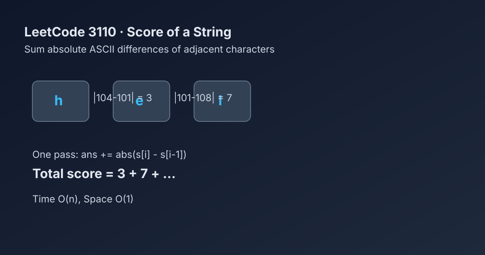

LeetCode 3110: Score of a String (Adjacent ASCII Difference Accumulation)
LeetCode 3110StringSimulationToday we solve LeetCode 3110 - Score of a String.
Source: https://leetcode.com/problems/score-of-a-string/

English
Problem Summary
Given a string s, define its score as the sum of absolute differences between ASCII values of each adjacent pair. Return this score.
Key Insight
Each adjacent pair contributes independently. If we iterate from left to right and add |s[i] - s[i-1]|, we get the exact total score in one pass.
Algorithm
1) Initialize ans = 0.
2) For i from 1 to n-1, add abs(s[i] - s[i-1]).
3) Return ans.
Complexity
Time: O(n).
Space: O(1).
Reference Implementations (Java / Go / C++ / Python / JavaScript)
class Solution {
public int scoreOfString(String s) {
int ans = 0;
for (int i = 1; i < s.length(); i++) {
ans += Math.abs(s.charAt(i) - s.charAt(i - 1));
}
return ans;
}
}func scoreOfString(s string) int {
ans := 0
for i := 1; i < len(s); i++ {
d := int(s[i]) - int(s[i-1])
if d < 0 {
d = -d
}
ans += d
}
return ans
}class Solution {
public:
int scoreOfString(string s) {
int ans = 0;
for (int i = 1; i < (int)s.size(); i++) {
ans += abs(s[i] - s[i - 1]);
}
return ans;
}
};class Solution:
def scoreOfString(self, s: str) -> int:
ans = 0
for i in range(1, len(s)):
ans += abs(ord(s[i]) - ord(s[i - 1]))
return ans/**
* @param {string} s
* @return {number}
*/
var scoreOfString = function(s) {
let ans = 0;
for (let i = 1; i < s.length; i++) {
ans += Math.abs(s.charCodeAt(i) - s.charCodeAt(i - 1));
}
return ans;
};中文
题目概述
给定字符串 s，其分数定义为所有相邻字符 ASCII 差值绝对值之和，返回该分数。
核心思路
每一对相邻字符对总分的贡献是独立的。线性扫描时累计 |s[i]-s[i-1]|，一次遍历即可得到答案。
算法步骤
1）初始化 ans = 0。
2）遍历 i=1..n-1，累加 abs(s[i] - s[i-1])。
3）返回 ans。
复杂度分析
时间复杂度：O(n)。
空间复杂度：O(1)。
多语言参考实现（Java / Go / C++ / Python / JavaScript）
class Solution {
public int scoreOfString(String s) {
int ans = 0;
for (int i = 1; i < s.length(); i++) {
ans += Math.abs(s.charAt(i) - s.charAt(i - 1));
}
return ans;
}
}func scoreOfString(s string) int {
ans := 0
for i := 1; i < len(s); i++ {
d := int(s[i]) - int(s[i-1])
if d < 0 {
d = -d
}
ans += d
}
return ans
}class Solution {
public:
int scoreOfString(string s) {
int ans = 0;
for (int i = 1; i < (int)s.size(); i++) {
ans += abs(s[i] - s[i - 1]);
}
return ans;
}
};class Solution:
def scoreOfString(self, s: str) -> int:
ans = 0
for i in range(1, len(s)):
ans += abs(ord(s[i]) - ord(s[i - 1]))
return ans/**
* @param {string} s
* @return {number}
*/
var scoreOfString = function(s) {
let ans = 0;
for (let i = 1; i < s.length; i++) {
ans += Math.abs(s.charCodeAt(i) - s.charCodeAt(i - 1));
}
return ans;
};
Comments